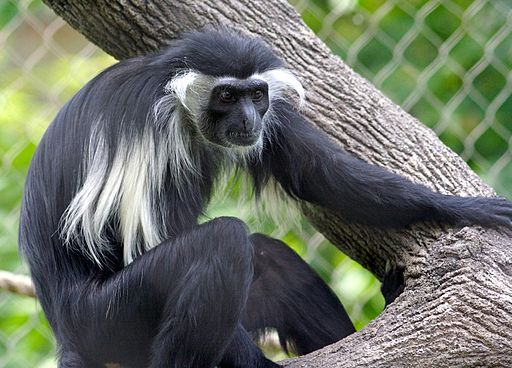
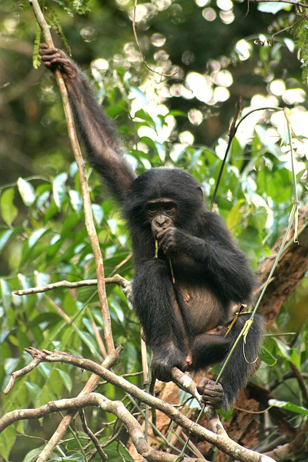
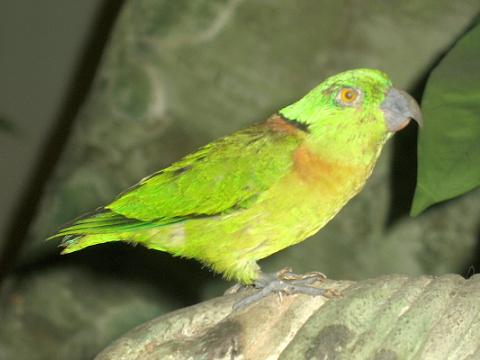
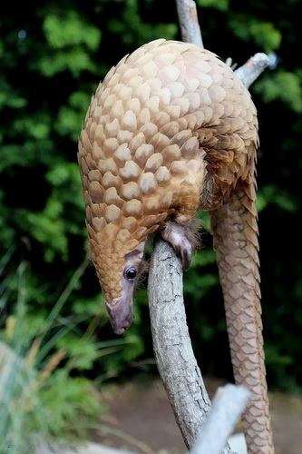
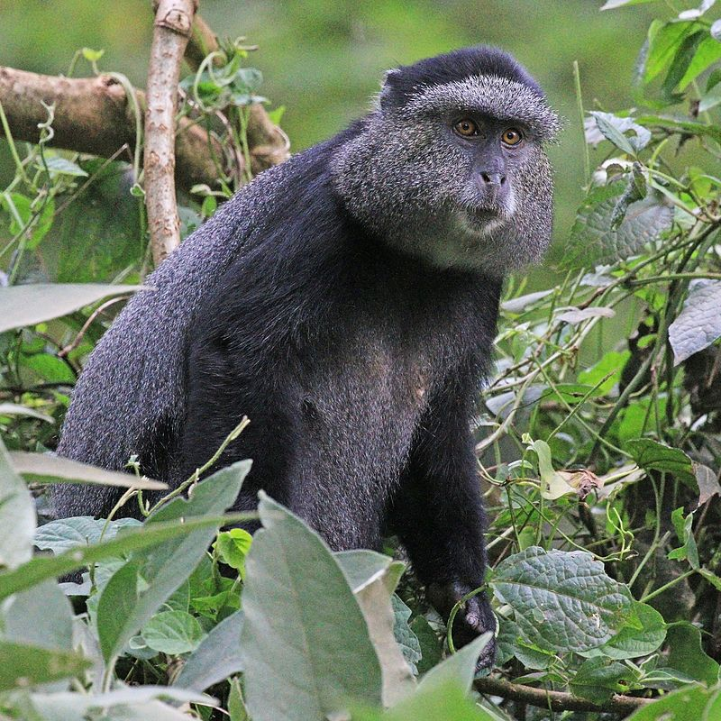
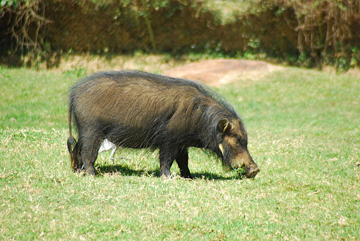

The Angola Colubus is 50 - 70cm long head to body and has a tail of about 75cm in length. The body weight is between 9 and 20kg. It subsists on leaves, fruit and seeds. It is a social animal, forming groups of upto several hundred individuals.
Ryan E. Poplin, CC BY-SA 2.0, via Wikimedia Commons
Bonobos are closely related to chimpanzees, from which they are separated by the Congo river. A bonobo is from 70 to 83cm long from nose to rump when on all fours. Females are slightly smaller than males. Bonobo males weigh an average of 45kg, whilst females weigh an average 33kg. Bonobos are omnivorous frugivores, about 57% of their diet is fruit. The animals live in matriarchal social groups which are nomadic, rather than territorial.
DBeaune, CC BY-SA 4.0, via Wikimedia Commons
The black-collared lovebird is an African parrot of the genus agapornis. It is about 13.5cm in length. Both sexes are similar. It subsists mostly on the native fig.
Stavenn, CC BY-SA 3.0, via Wikimedia Commons
The tree pangolin is 33 - 43cm head to body length with a tail of from 49 - 62cm in length. It eats ants and termites from their nests ants as well as other insects. It digs burrows with its claws. The creatures are solitary and territorial, female territories being about 10 acres, whilst male territories are about 60 acres, overlapping female territories.
Николай Усик / http://paradoxusik.livejournal.com/, CC BY-SA 3.0, via Wikimedia Commons
The blue monkey is 50 - 65cm in length, the tail is about as long as the monkey itself. Females weigh about 4kg and males upto 8kg. It lives on fruit, seeds, leaves, insects and flowers. Blue monkeys live in familial groups with a male, several females and offspring.
Charles J. Sharp, CC BY-SA 4.0, via Wikimedia Commons
Giant forest hogs are between 1.3 and 2mtrs long and stand 0.75 to 1.1mtrs tall. They weigh between 100 and 275kg. Males are somewhat larger than females. The diet consists mostly of grasses, sedges and herbage, as well as digging for roots.
michell zappa from São Paulo, Brazil, CC BY-SA 2.0, via Wikimedia Commons